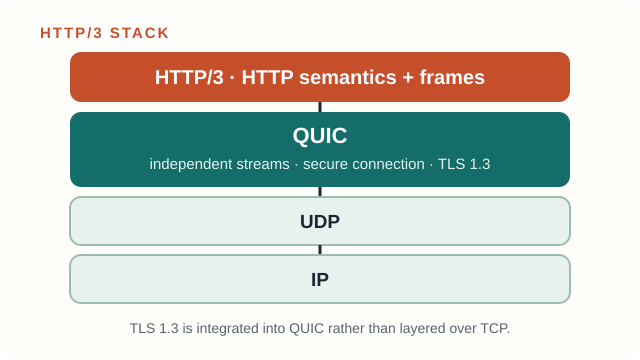

04 · Transport changes
HTTP/3: HTTP over QUIC
HTTP/3 keeps the familiar HTTP model and uses QUIC to change connection setup and stream delivery.
QUIC sits below HTTP/3
HTTP/3 maps HTTP semantics onto QUIC, a multiplexed and secure transport that runs over UDP. QUIC incorporates TLS 1.3 into its handshake and provides independent streams. A missing piece on one stream does not require the receiver to wait for that same missing data before delivering bytes from another stream, although congestion and network conditions can still affect the whole connection. See RFC 9114, RFC 9000, and RFC 9001.

Why QUIC changes the experience
- Independent streams: loss on one stream does not impose TCP’s ordered-byte wait across every stream.
- Integrated security: QUIC uses TLS 1.3 to establish secure connections.
- Field compression: HTTP/3 uses QPACK, designed for its stream behavior. RFC 9204 specifies it.
- Version fallback: networks and servers differ, so HTTP/2 and HTTP/1.1 remain useful when HTTP/3 is unavailable.
What students should remember
Same HTTP meaning, different transport
HTTP/3 does not replace methods, status codes, caching rules, or resource identifiers with a new application model. It changes how HTTP messages move through the network. Actual speed depends on the connection, server, browser, and content.